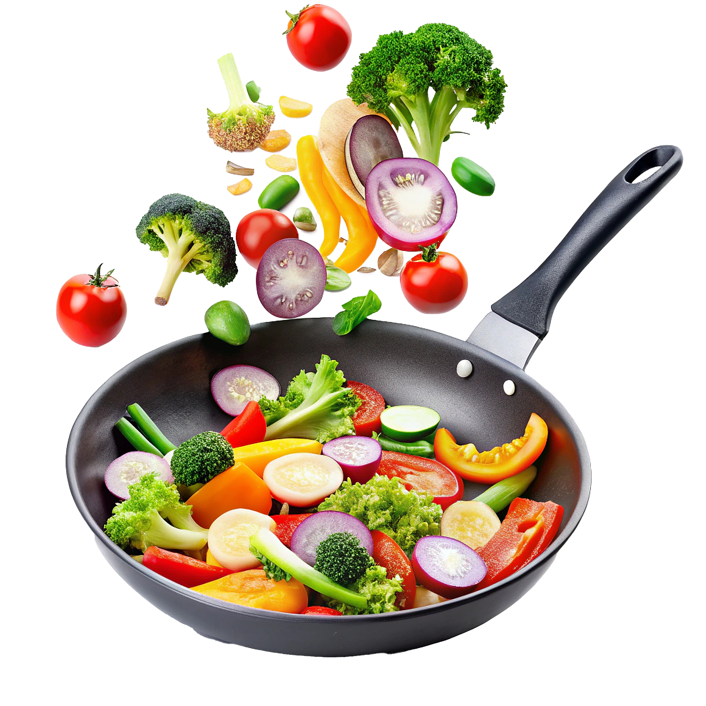

Bolo de cenoura
- 3 cenouras médias
- 3 ovos
- 1 xícara de óleo
- 2 xícaras de farinha de trigo
- 2 xícaras de açúcar
Aprenda a fazer suas receitas favoritas ou encontre sua próxima receita favorita!
Explorar receitas


O Saborê foi criado para facilitar a busca por receitas e ajudar você a descobrir novos pratos para preparar em casa.
Aqui você encontra receitas organizadas por categorias, níveis de dificuldade e diferentes tipos de pratos.
Ver receitasReceitas doces, salgadas, massas, carnes e muito mais.
Encontre receitas de forma simples e organizada.
Opções para diferentes níveis de experiência na cozinha.